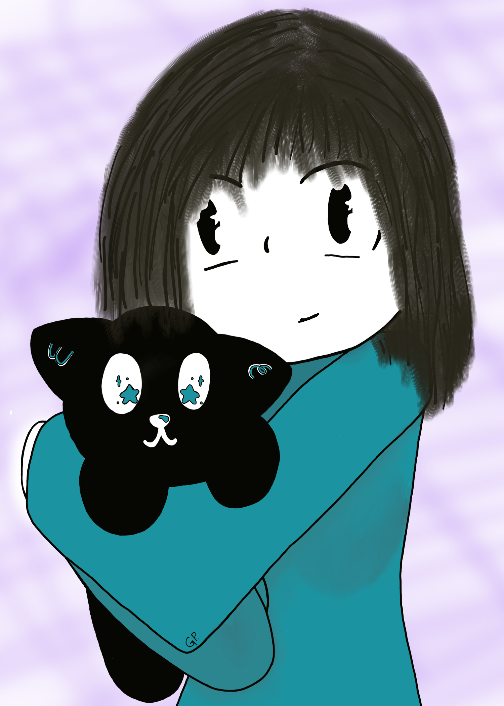
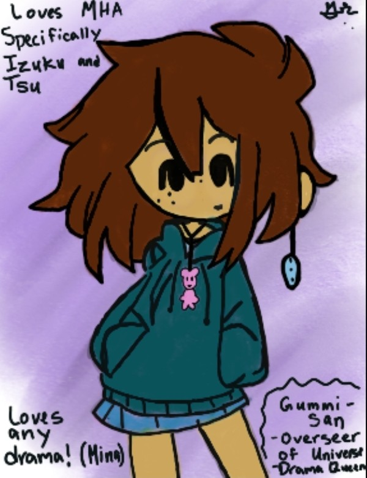

Welcome to my Personal Website!
Heyo! My name is Gummi, an alias as most of you may have assumed. This is my personal website that you can jump around on! Feel free to explore more by pressing on the tabs above. I think you'll enjoy what you find in them and maybe, just maybe, you'll find something that will peak your curiosity! This is one of the first versions of this and I hope to upgrade this as time goes on.

This is a drawing of me! I look pretty close to this in real life except a couple of things. I have some piercings and brown hair that most people mistake as black. In my hands, I have my plushy Gumcat, who i got from Meow this past December. I love her so much!

This is an OC of mines I use for my fanfic. This was from a while back and I thought I'd just show it off since it hasn't seen the light of day in a while. She is kind of a represenation of me if I were in the My Hero Academia universe. She was fun to draw and I hoep to update her design soon!